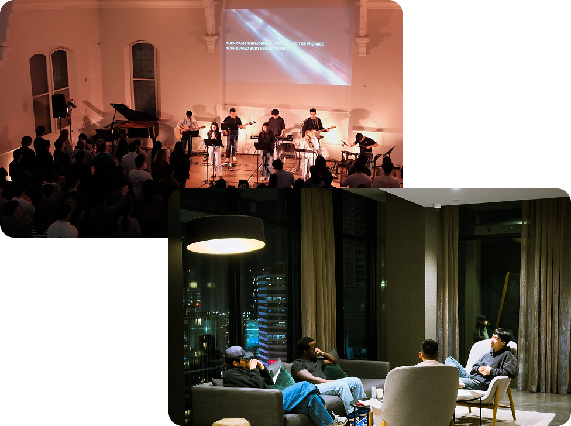
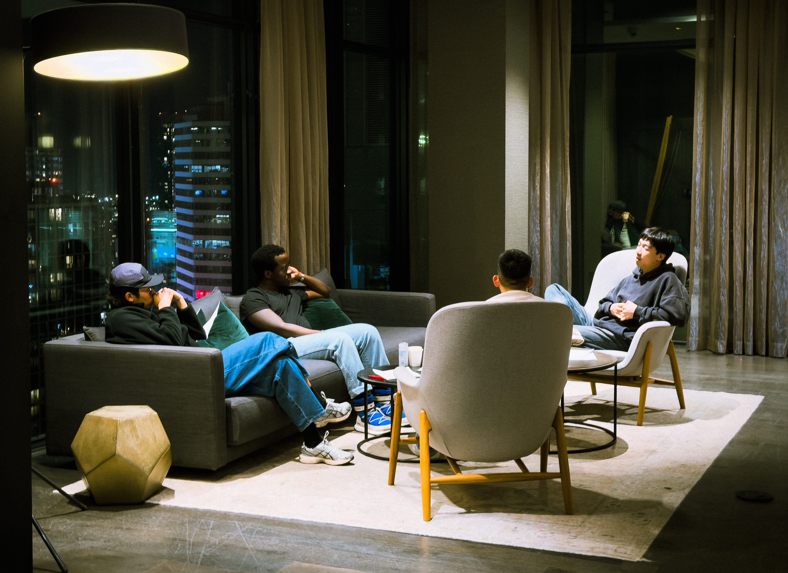
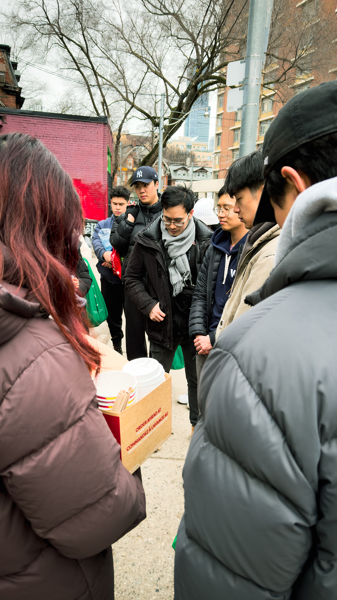
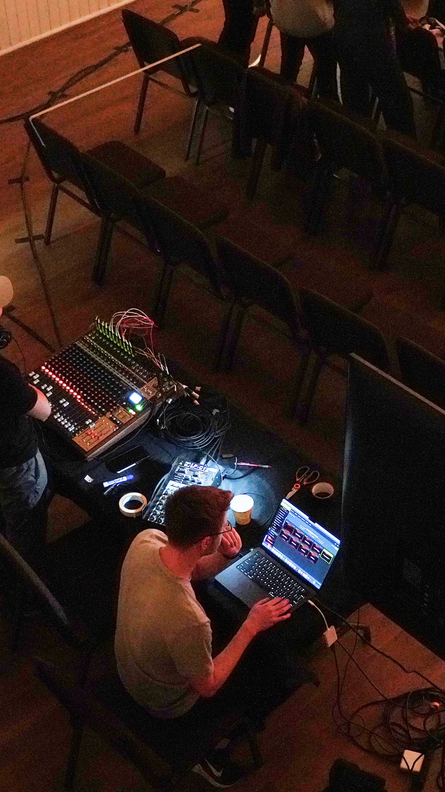
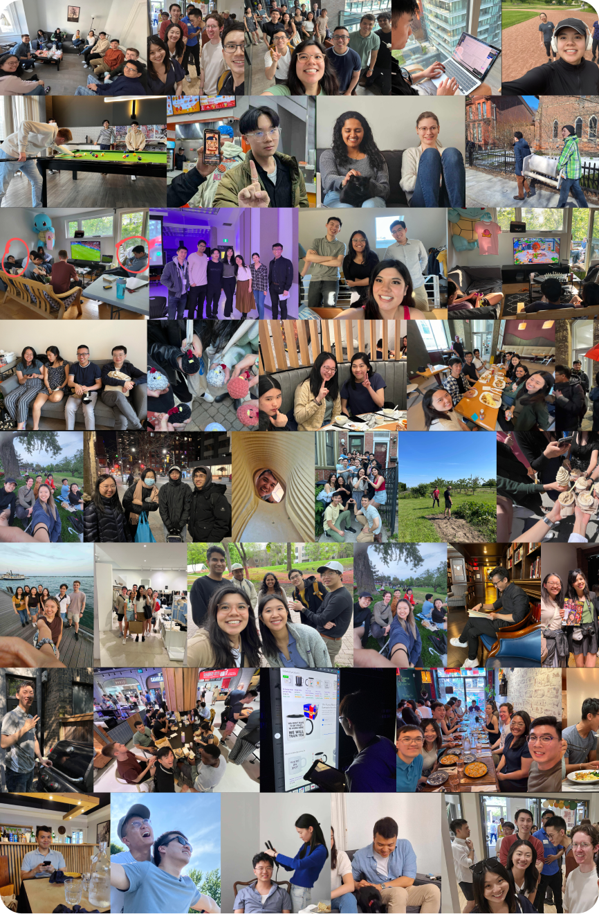
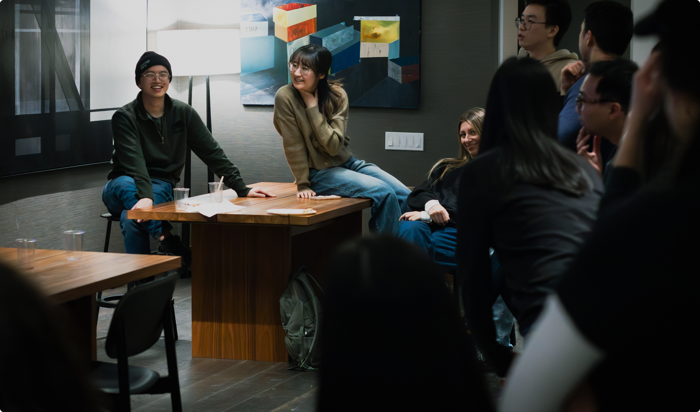

Grace Toronto
383 Jarvis St Toronto ON
2nd Floor
We are a fellowship community for graduate students and young professionals to embody the light of Christ in today's cultural context.
Our mission is to encourage one another to walk with Jesus, see the world like Jesus, and act like Jesus.
Who We Are +
383 Jarvis St Toronto ON
2nd Floor
5 Hoskin Ave Toronto ON
1st Floor

Occasional off-site locations
in downtown Toronto
We meet at alternating locations downtown, announced in advance based on partner venue availabilities.
Check our schedule on Discord or InstagramEvery Friday we come together for a time of worship, discussion, prayer, and fellowship.
Every Friday evening we come together for a time of fellowship and discussion.
Register Now +
Every Friday evening we come together for a time of fellowship and discussion.
Register Now +
Every Friday evening we come together for a time of fellowship and discussion.
Register Now +
Every Friday evening we come together for a time of fellowship and discussion.
Register Now +
Every Friday evening we come together for a time of fellowship and discussion.
Register Now +The Christian Graduate Fellowship (CGF) was established in 2020 as an offshoot of Power to Change UTSG. It began when a group of graduate students came together to explore challenging questions, such as how to live out their faith in the workplace.
During the pandemic, as the Fellowship grew, meetings transitioned from virtual gatherings to in-person gatherings at members' homes. As the group continued to expand, it became evident that a more permanent and spacious meeting place was necessary. In 2022, Grace Toronto Church graciously offered its facilities for the Fellowship's weekly meetings. By God's grace, the Christian Graduate Fellowship has continued to flourish, growing from a small group of students into a vibrant community of graduate students and young professionals.

